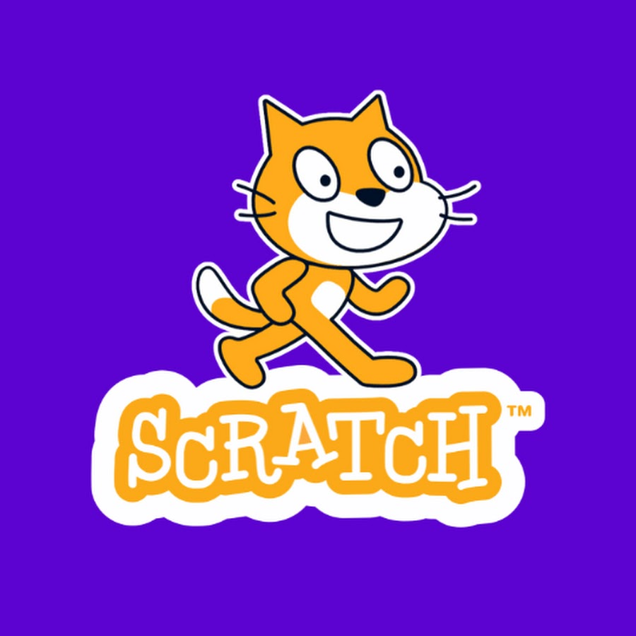
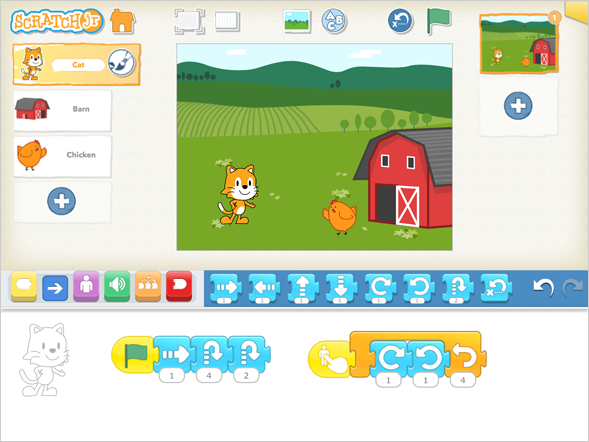
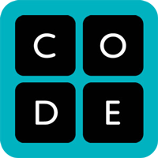
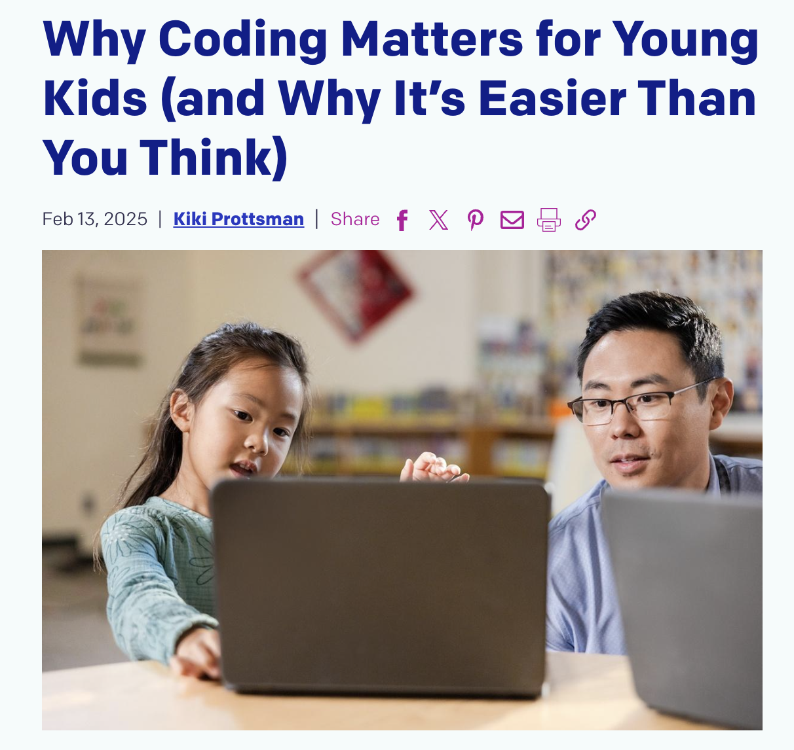

Coding Resources

Scratch – Create Interactive Stories, Games, and Animations

ScratchJr – Introduce Coding to Young Learners

Code.org – Interactive Coding Lessons and Activities

Why Coding Matters for Young Kids – Building Creativity and Problem-Solving Skills

Why Coding Is Important to learn - TedTalk